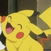
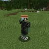
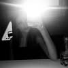

Dziabong z Poznania. Ministrant i cichy killer trybu gry.
🔥 Dziabong Mode

Pross
Minecraft master z Turku. Craft, kopanie i emocje do końca.
🎮 Minecraft Boss

Orzech
Spec od ZPŚ i wszystkich aktualizacji.
📢 Update King
Joaś
Reprezentant Umieszcza.
🌍 Umieszcze Power

Daria
Reprezentantka Opola.
✨ Opole Energy
🎵 Hymn Ekipy 🎵
1.
Ta grupa to bardzo dziwne miejsce
Gdzie Joaś w Umieszczu sra wielce
Woda walczy o partnerstwa na discordzie
Orzech daje ciekawostki o nastepnym update
REF.:
Umiesz, umiesz, umieszcz, umieszcz (umieszcz)
Umiesz, umiesz, umieszcz, umieszcz (umieszcz)
Umiesz, umiesz, umieszcz, umieszcz (umieszcz)
Umiesz, umiesz, umieszcz, umieszcz (umieszcz)
2.
Woda stalkuje wszystkich i robi screenshoty
Pross gra w minecrafta - najlepsze klocki
Jajek ma mózg pięciolatka, zresztą jak Joachim
Joltek ciągle się poci w Clash Royale
REF.:
Umiesz, umiesz, umieszcz, umieszcz (umieszcz) [x4]
3.
Ciastek ciągle wpierdala serdelki (pycha)
Woda w Poznaniu stoi za Lechem, jebać legię
Moderatorzy wiki to kurwy kurwy pierdolone
Mody wiki do kurwy i cwele!
REF.:
Umiesz, umiesz, umieszcz, umieszcz (umieszcz) [x2]
Napadamy, napadamy, napadamy, napadamy, napadamy, napadamy!
Outro
(Ciastek ciągle wpierdala serdelki (pycha)
Woda w Poznaniu stoi za Lechem, jebać legię
Moderatorzy wiki to kurwy kurwy pierdolone
Mody wiki do kurwy i cwele!)
REF.:
Umiesz, umiesz, umieszcz, umieszcz (umieszcz)
Umiesz, umiesz, umieszcz, umieszcz
Napadamy, napadamy, napadamy, napadamy, napadamy, napadamy, napadamy, napadamy, napadamy, napadamy, napadamy, napadamy, napadamy, napadamy!!!